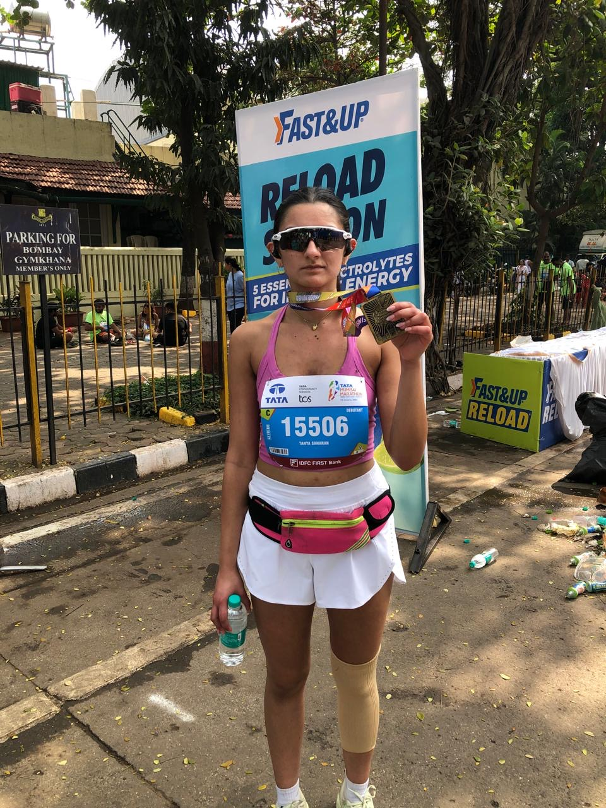

Tata Mumbai Marathon
1/29/26
I ran the Mumbai Marathon on January 18th. It was the most painful day of my life.
This was my first marathon. At mile 17, I texted my mom telling her that I wanted to quit. I didn’t train optimally in Delhi’s AQI, didn’t acclimatize to Mumbai’s climate, my IT band flared up halfway, and my mind was screaming at me to stop and DNF.
I limped-ran to my mom and she made me sit down and have some electrolytes. On the plastic chair, watching all the runners in neon pass by, I couldn’t control my tears. Seeing me try to hide my tears, a lady offered me pain relief spray, coconut water and dates. Other runners checked in and a physiotherapist made me stretch my left leg out. Then an old man came up and said a line that changed the moment for me - “you’re not quitting, walk if you need to, but finish.”
I got up and started run-walking. My left knee wouldn’t bend, and I had no idea how I’d push through 9 miles with an injury, but I started and kept going. So many runners checked in, sprayed my knee or gave me gels. A runner ran with me to the finish line, distracting me from the pain. I finished seeing my mom with a huge poster. I technically ran alone, but finished it because of my mom and the many people of Bombay.
After I got my medal, a banana, electrolytes and other goods, I limped while my mom called a cab. Later that day, I sat on my hotel room floor, icing both my calves, crying. The sobs were heavy, filled with relief, pain and awe. I won’t forget that moment.
I overrode my perfectionism and the voice in my head telling me to stop at mile 17 to complete an imperfect marathon. Had I quit midway through the race, I might have felt relief for a bit, and no one would have cared, but I would have had to live with that for the rest of my life. Regardless of whether anyone else knew, I would’ve.
I’ve been through my fair share of tough times, but this day of voluntary suffering took away power from that scared voice in my head. Right now, I’m in a transit week, about to start a new life in a new city, and it’s daunting. But whenever I start freaking out about anything, I think back to the night before the marathon in the hotel, where I was so nervous I couldn’t speak, and still pinned my bib, showed up at the start line, and finished. No other challenge really compares.
Rather than being discouraged from running marathons, I’m more energized to recover properly and train better for the next one. I need to add strength training to avoid injury, run consistently, fuel properly and get better sleep. When you throw yourself in the deep end of the pool underprepared, the worst thing that can happen is drowning, and the best is lots of learning. I luckily got the latter.
